microlearning/intermediate-rest-webservice-connectivity-authorization-oauth-authorization-code
Intro
Authorization - OAuth 2.0 Authorization Code
In this microlearning, we will discuss how you can ensure that the correct credentials are sent to the external system. There are many forms of OAuth 2.0 authorization flows. The one that we see most for interchanging data between applications is the client credentials flow. In this microlearning, however, we will focus on an OAuth 2.0 authorization flow that is less well known. In this microlearning, we will learn how you need to configure certain components within your flow to successfully send the relevant authentication information to the external system with the help of the authorization code OAuth 2.0 flow.
Should you have any questions, please contact academy@emagiz.com.
- Last update: April 6th, 2021
- Required reading time: 7 minutes
1. Prerequisites
- Intermediate knowledge of the eMagiz platform
2. Key concepts
This microlearning centers around authenticating ourselves with an external REST web service via the OAuth 2.0 Authorization Code flow. With OAuth 2.0 flow, we mean: A specific flow that enables a third-party application to obtain limited access to an HTTP service With REST, we mean: A web service that adheres to the RESTful principles
- The application (eMagiz) pushes data to an external REST web service (or API)
- To do so eMagiz needs to be authorized to read and/or write data
- OAuth 2.0 is an industry-standard that is widely implemented, especially in combination with API development
Theory
3. Authorization - OAuth 2.0 Authorization Code
There are many forms of OAuth 2.0 authorization flows. The one that we see most for interchanging data between applications is the client credentials flow. In this microlearning, however, we will focus on an OAuth 2.0 authorization flow that is less well known. In this microlearning, we will learn how you need to configure certain components within your flow to successfully send the relevant authentication information to the external system with the help of the authorization code OAuth 2.0 flow. Key parts to consider for this microlearning are:
- The application (eMagiz) pushes data to an external REST web service (or API)
- To do so eMagiz needs to be authorized to read and/or write data
- OAuth 2.0 is an industry-standard that is widely implemented, especially in combination with API development
Within eMagiz, you have a lot of components that help you build your flows. The same applies when you want to authorize yourselves with an external party with the help of OAuth 2.0. So let us discuss how we should make that happen.
3.1 H2 Connection Pool
When you navigate to the Create phase you can open an exit flow and see whether you already have an HTTP outbound component within your exit flow. If not please add an HTTP outbound component (gateway or channel adapter) to the flow. In one of our earlier microlearnings in this course, we focused on these components so we won't focus on these components in this microlearning.
Contrary to the client credentials flow you do need to store the token information in the case of the authorization code flow. The authorization code flow works based on a refresh token. With that refresh token, you can retrieve a new access token (that expires within minutes) and a new refresh token (needed to retrieve the new access token after it has expired). As you can imagine you do not want to lose that refresh token based on restarts or new deployment but you want to safely store them. To make this happen for the authorization code flow of OAuth 2.0 we need some additional steps. The first step is to add a support object called the H2 connection pool to the flow.
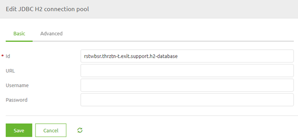
Here we need to define the URL where the H2 database will be located. Use the help text of eMagiz as guidance and only change messagestore to oauthstore. Furthermore, fill in a username and password of your liking. As always in scenarios where an information element can change between environments, you should use a property reference and determine the correct value on a per-environment basis.
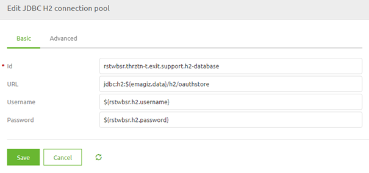
3.2 REST Template
To ensure that a certain authorization is added to this HTTP outbound component we need to add the support object called REST Template to the flow:
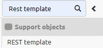
After you have added the support object to the canvas and given it a name you can open it by double clicking on the component. eMagiz will show you the following pop-up:
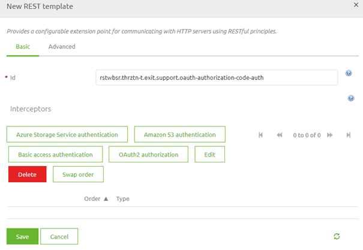
As you can see here you can select various authentication schemes. In this microlearning, the focus is on the OAuth 2.0 Authorization Code therefore we select the button called OAuth2 authorization. Selecting this option will open another pop-up. In this pop-up, we need to fill in the relevant information for the authentication scheme that we have selected.
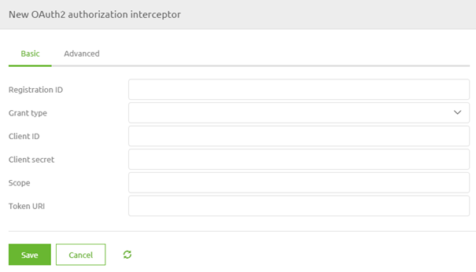
In this case, we have to fill in several items. At first, we need to fill in a registration ID. This can be anything you want. The best practice is to name it after the runtime you are currently working on. The second configuration element is the Grant Type. Here you can select the various grant types that are available within the various OAuth 2.0 authorization flows. For this microlearning, we will select the Authorization Code option.
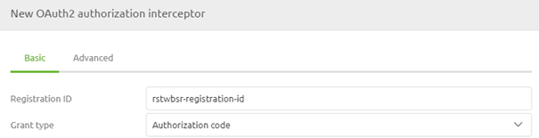
The second part of your configuration has to do with the 'username' and 'password' you need to send to the OAuth 2.0 endpoint to retrieve a token you can use in subsequent calls. In OAuth 2.0 the 'username' and 'password' are called client id and client secret. As always in scenarios where an information element can change between environments, you should use a property reference and determine the correct value on a per-environment basis.
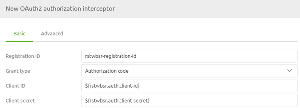
The next part of the configuration is where the Client Credentials flow and the Authorization Code flow of OAuth 2.0 are diverging from each other. In the Authorization Code flow, we need to define the starting point of the flow, the authorization code. As always in scenarios where an information element can change between environments, you should use a property reference and determine the correct value on a per-environment basis.
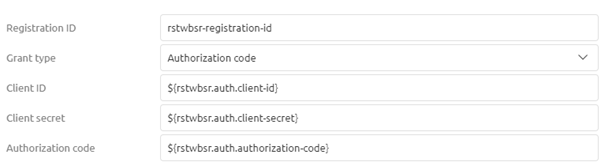
The fourth part of your configuration has to do with the scope. When the external party has defined a scope (i.e. to what do you have access exactly) you should define that exact scope in this configuration. If the external party has not defined any scope you can fill it with a default static value. As always in scenarios where an information element can change between environments, you should use a property reference and determine the correct value on a per-environment basis.
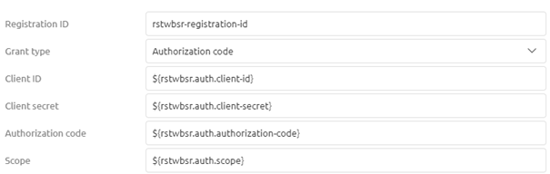
Our fifth part of the config on the basic tab identifies which endpoint will provide us with the token necessary to authenticate ourselves in subsequent calls to the actual endpoints. In most cases, these endpoints have the word token in them. As always in scenarios where an information element can change between environments, you should use a property reference and determine the correct value on a per-environment basis.
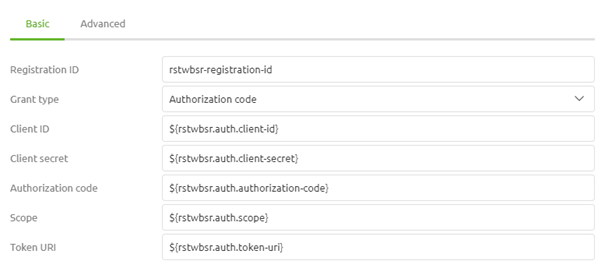
Once again we are at a place where the Authorization Code flow differs from the Client Credentials flow. In the previous microlearning, we were done with our basic configuration. However, as the Authorization Code flow works with approval and subsequent access token and refresh tokens we need to specify more information we need to specify two more URI to finish our basic configuration. This first URI defines to which URI you should go to start the process. This URI is called the authorization URI. The second URI is the redirect URI. As this OAuth 2.0 flow is mainly used when there is user interaction involved the flow assumes that a user will grant someone access. To bypass this in eMagiz you need a working redirect URI. The help text of eMagiz provides you with an alternative. Otherwise, you can use the redirect URI of Postman (https://oauth.pstmn.io/v1/callback). As always in scenarios where an information element can change between environments, you should use a property reference and determine the correct value on a per-environment basis.
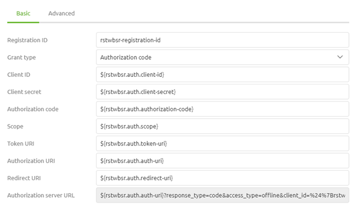
Now that we have configured the basic tab we need to turn our attention to the advanced tab. Here we need to configure some additional elements. For token persistence, we choose the option JDBC Memory as it is necessary to store the data somewhere so it can be used again later in this OAuth 2.0 flow (i.e. the refresh token). To ensure that the data ends up in the correct place you need to select the JDBC data source where the refresh token will be stored, which we added to the flow early on. Furthermore, we select the option Form as Authentication Method. This will ensure that the information is sent correctly to the endpoint.
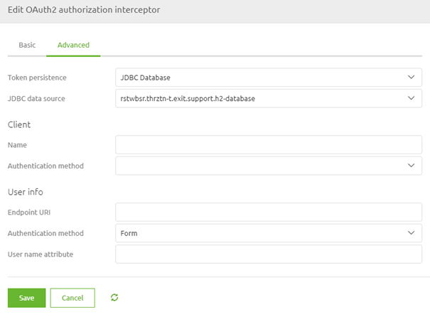
When you are satisfied you can press Save. This will lead you back to the original pop-up that now indicates the authentication scheme you have selected.
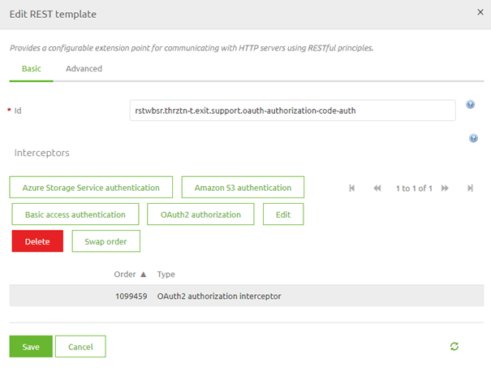
Once again you can press Save if you are satisfied with your configuration.
3.3 Initialize database
Although we have specified a location for our H2 database and the security we have not yet specified how the table within the database should look like that will store our data. This is where another support object of eMagiz comes in. It is called JDBC initialize database.
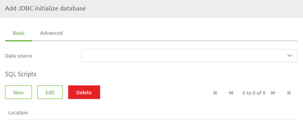
Make sure that you link this component to the H2 connection pool you have added at the beginning of this microlearning and that you define the SQL script. The correct location for the script can be found in the help text provided by eMagiz.
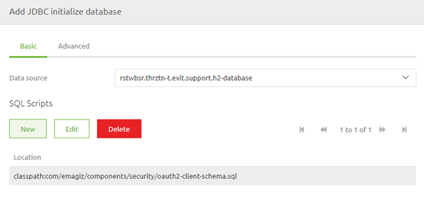
3.2 Link REST Template to HTTP Outbound Component
Now that we have successfully configured the REST Template, and all accompanying components, the last thing we need to do is link the REST Template to the HTTP Outbound component in your flow. To do so open the HTTP Outbound component by double-clicking on the component. After you have opened the component you need to navigate to the advanced tab. On this tab, you can select a REST Template. Select the one we have just configured from the drop-down menu and press Save.
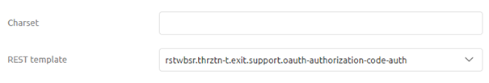
Now you have successfully linked the REST Template to the HTTP Outbound Gateway. If you ever want to validate whether a support object is indeed linked to your component simply click on it once. That way eMagiz will show the selected component and all other components that are linked to it.
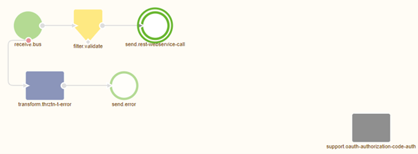
Practice
4. Assignment
Navigate to a flow within your (Academy) project in which you call a REST Webservice. Add OAuth 2.0 Authentication - Authorization Code as an authentication scheme to this flow and ensure that the logic will work. This assignment can be completed with the help of the (Academy) project that you have created/used in the previous assignment.
5. Key takeaways
- eMagiz pushes data to or retrieves data from the external party
- eMagiz offers two HTTP Outbound components to call a REST Webservice. Choose based on whether you want a response or not
- To do so eMagiz needs to be authorized to read and/or write data
- OAuth 2.0 is an industry-standard that is widely implemented, especially in combination with API development
- Don't forget to link the support object to the HTTP Outbound component
Solution
6. Suggested Additional Readings
If you are interested in this topic and want more information on it please read the help text provided by eMagiz.
7. Silent demonstration video
This video demonstrates how you could have handled the assignment and gives you some context on what you have just learned.